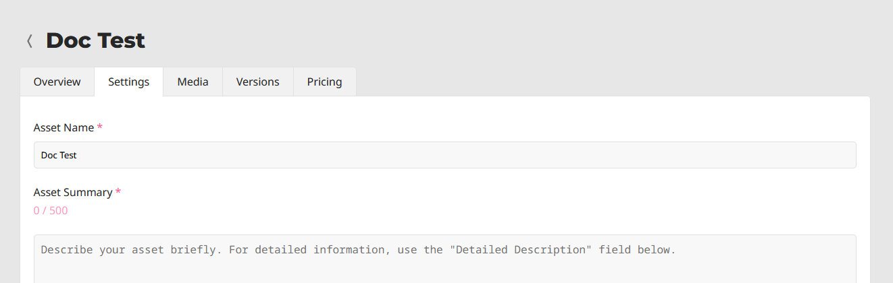

Gửi lên Asset Store
Giới thiệu
Bài hướng dẫn này nhằm chỉ dẫn cách bạn có thể gửi asset của riêng mình lên Godot Asset Store và chia sẻ chúng với cộng đồng Godot.
Như đã đề cập trong trang Sử dụng website Asset Store, để có thể gửi asset lên Asset Store, bạn cần có một tài khoản đã đăng ký và đã đăng nhập.
Nguyên tắc gửi asset
Trước khi gửi asset, hãy đảm bảo nó đáp ứng mọi yêu cầu, đồng thời cân nhắc làm theo các khuyến nghị.
Yêu cầu
Nói chung, phần lớn asset mà mọi người gửi lên Asset Store đều được chấp nhận. Tuy nhiên, để asset của bạn được chấp nhận, nó cần đáp ứng một vài yêu cầu để được phê duyệt.
Asset phải hoạt động được. Nếu asset không chạy hoặc không hoạt động trong phiên bản Godot được chỉ định, nó sẽ bị từ chối.
Asset phải có tệp .gitignore phù hợp. Việc giữ dữ liệu dư thừa ra khỏi kho mã rất quan trọng. Đây là một mẫu.
Không có submodule, hoặc mọi submodule đều phải là không thiết yếu. GitHub không đưa submodule vào tệp ZIP được tải xuống, vì vậy nếu asset cần nội dung của submodule thì asset của bạn sẽ không hoạt động.
Giấy phép cần phải chính xác. Giấy phép được ghi trên Asset Store phải khớp với giấy phép trong kho mã. Kho mã bắt buộc phải có tệp giấy phép, tên là "LICENSE" hoặc "LICENSE.md". Tệp này phải chứa chính văn bản giấy phép và một tuyên bố bản quyền bao gồm (các) năm và chủ sở hữu bản quyền.
Dùng tiếng Anh chuẩn cho tên và mô tả asset. Điều này bao gồm viết hoa đúng cách và dùng câu hoàn chỉnh trong phần mô tả. Bạn cũng có thể thêm các ngôn ngữ khác, nhưng ít nhất phải có một phiên bản tiếng Anh.
Liên kết biểu tượng phải là liên kết trực tiếp. Với biểu tượng được lưu trữ trên GitHub, liên kết phải bắt đầu bằng "raw.githubusercontent.com", không phải "github.com".
Khuyến nghị
Những điều này không bắt buộc để asset của bạn được phê duyệt, nhưng nếu bạn làm theo các khuyến nghị này, bạn có thể giúp asset store trở thành một nơi tốt hơn cho mọi người dùng.
Khi tạo asset không phải dự án, thông lệ phổ biến là đặt các tệp của bạn bên trong thư mục addons/asset_name/. Hãy làm vậy để tránh tệp của bạn xung đột với các asset khác, hoặc với tệp của người dùng đang cài asset của bạn. Thư mục này sẽ không được tự động tạo khi người dùng cài asset của bạn.
Sửa hoặc ẩn mọi cảnh báo của script. Hệ thống cảnh báo có mặt để giúp phát hiện vấn đề trong mã của bạn, nhưng những người dùng asset của bạn không cần thấy chúng.
Làm cho mã của bạn tuân theo hướng dẫn phong cách chính thức. Phong cách nhất quán giúp người khác đọc mã của bạn, và cũng có ích nếu người khác muốn đóng góp cho asset của bạn. Xem Hướng dẫn phong cách GDScript hoặc Hướng dẫn phong cách C#.
Nếu bạn có ảnh chụp màn hình trong kho mã, hãy đặt chúng vào một thư mục con riêng và thêm một tệp .gdignore rỗng trong cùng thư mục đó (lưu ý: gd, không phải git). Điều này ngăn Godot import ảnh chụp màn hình của bạn. Trên Windows, hãy mở cửa sổ dòng lệnh trong thư mục dự án và chạy
type nul > .gdignoređể tạo một tệp có tên bắt đầu bằng dấu chấm.Nếu asset của bạn là một thư viện để làm việc với các tệp khác, hãy cân nhắc đưa tệp ví dụ vào asset.
Hãy cân nhắc thêm tệp .gitattributes vào kho mã. Tệp này cho phép đưa thêm chỉ dẫn cho Git, chẳng hạn như chỉ định ký tự xuống dòng và liệt kê các tệp không cần thiết để asset hoạt động bằng chỉ thị
export-ignore. Chỉ thị này loại bỏ các tệp đó khỏi tệp ZIP kết quả, ngăn người dùng Asset Store tải chúng xuống. Đây là các ví dụ phổ biến về .gitattributes:# Normalize line endings for all files that Git considers text files. * text=auto eol=lf
# Normalize line endings for all files that Git considers text files. * text=auto eol=lf # Only include the addons folder when downloading from the Asset Store. /** export-ignore /addons !export-ignore /addons/** !export-ignore
Nếu bạn gửi một plugin, hãy thêm một bản sao của giấy phép và tệp readme vào chính thư mục plugin. Đây là thư mục mà người dùng chắc chắn sẽ giữ lại trong dự án, nên bản sao này đảm bảo họ luôn có sẵn các tệp đó (và giúp họ tuân thủ các điều khoản giấy phép của bạn).
Mặc dù Asset Store cho phép dùng nhiều dịch vụ khác ngoài GitHub, bạn nên cân nhắc lưu trữ mã nguồn asset của mình trên GitHub. Các dịch vụ khác có thể hoạt động không ổn định, và việc không quen thuộc có thể trở thành rào cản đối với người đóng góp.
Gửi asset
Sau khi đăng nhập, hãy nhấp vào Upload Asset ở góc trên bên phải của website. Bạn sẽ được đưa đến trang sau:

Dưới đây là giải thích từng trường:
Publisher: Đây là tên công khai gắn với asset. Ví dụ, asset XR Tools có publisher là "Godot XR".
Publisher Name: Tên của publisher mới mà bạn đang tạo.
Publisher URL Slug: cách publisher hiển thị trong đường dẫn. Ví dụ, asset XR Tools có URL sau:
https://store.godotengine.org/asset/godot-xr/godot-xr-tools/Publisher URL Slug trong đường dẫn đó là "godot-xr".
Asset Name: Tên asset của bạn. Nên là một tiêu đề duy nhất, mô tả rõ asset của bạn là gì.
Asset URL: Cách asset được đặt tên trong đường dẫn. Ví dụ, asset XR Tools có URL sau:
https://store.godotengine.org/asset/godot-xr/godot-xr-tools/Asset URL của đường dẫn đó là "godot-xr-tools".
Sau khi điền xong các trường đó, hãy đọc và đồng ý với điều khoản dịch vụ, rồi nhấp "Continue". Bạn sẽ được đưa đến trang quản lý của asset, nơi bạn có thể chỉnh sửa gần như mọi thứ về cách asset hiển thị trên store, cũng như tải lên các phiên bản khác nhau.

Các trang quản lý
Tổng quan
Tab tổng quan cho phép bạn gửi asset để được duyệt. Bạn cũng có thể xem số liệu thống kê, bao gồm số lượt tải xuống, số lượt truy cập trang và số người đã thêm asset vào thư viện của họ.
Bạn cũng có thể xóa asset ở cuối trang trong tab này.
Cài đặt
Tab này là nơi bạn thiết lập các thông tin chung sau về asset của mình:
Tóm tắt asset
Mô tả chi tiết
Thẻ (tag)
Loại asset (Full Project hoặc Addon)
Giấy phép
Liên kết đến mã nguồn
Công bố việc sử dụng AI (Điều này là bắt buộc nếu bạn sử dụng AI)
Media
Tab media là nơi bạn tải lên ảnh thu nhỏ, ảnh chụp màn hình, một hình ảnh cho trang nổi bật nếu muốn, và liên kết đến video YouTube nếu có.
Phiên bản
Đây là nơi bạn tải lên các file asset thực tế. Với mỗi phiên bản tải lên, bạn có thể đặt tên, viết changelog và chỉ định phiên bản Godot tối thiểu (và tối đa nếu có). Ngoài ra còn có một trường thông tin bổ sung cho các nội dung khác.
Mỗi phiên bản có dung lượng file tối đa là 1GB.
Giá
Mặc dù hiện chưa thể tải lên asset trả phí, vẫn có một số cài đặt liên quan đến asset miễn phí. Bạn có thể liên kết đến một website khác nơi bạn nhận quyên góp, chẳng hạn Patreon hoặc Ko-Fi. Bạn cũng có thể tắt đánh giá nếu muốn (trong tương lai, asset trả phí sẽ không có tùy chọn này).
Gửi để duyệt
Khi hoàn tất, hãy nhấn "Submit". Asset của bạn sẽ được đưa vào hàng đợi duyệt. Bạn sẽ được thông báo khi asset được duyệt. Nếu bị từ chối, bạn sẽ được cho biết lý do có thể là gì, và bạn có thể gửi lại sau khi thực hiện các thay đổi phù hợp.